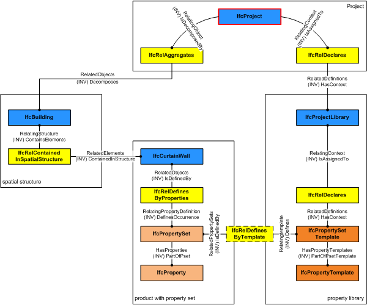

| Merkmalsliste - Vorlage |
 | Property Set Template |
 | Modèle d'ensemble de propriété |
| Item | SPF | XML | Change | Description | IFC2x3 to IFC4 |
|---|---|---|---|---|
| IfcPropertySetTemplate | ADDED |
IfcPropertySetTemplate defines the template for all dynamically extensible property sets represented by IfcPropertySet. The property set template is a container of property templates within a property tree. The individual property templates are interpreted according to their Name attribute and shall have no values assigned.
NOTE By convention an IfcPropertySetTemplate can also be used as a template for an IfcElementQuantity, being a particular type of a property set definition.
Property set templates can form part of a property library used and declared within a project. Depending on the TemplateType the IfcPropertySetTemplate defines a template for:
\\* "Pset_" - occurrences of IfcPropertySet \\* "QTO_" - occurrences of IfcElementQuantity
The inherited HasContext inverse relation to IfcRelDeclares is used to declare the IfcPropertySetTemplate within a project library. If included in an exchange data set it can then be traversed through the IfcProjectLibrary. The Defines inverse relation to IfcRelDefinesByTemplate is provided to keep the definition relationship between the IfcPropertySetTemplate and the one to many IfcPropertySet's, for which it provides the template. Figure 5 illustrates relationships used for property set templates.
|  |
Figure 5 — Property set template relationships |
Between IfcProperty's within the HasProperties set of IfcPropertySet having the same Name attribute value as the IfcPropertyTemplate's within the HasPropertyTemplates set of IfcPropertySetTemplate an implicit definition relationship is established that assigns the template to the individual properties.
HISTORY New entity in IFC4.
| # | Attribute | Type | Cardinality | Description | C |
|---|---|---|---|---|---|
| 5 | TemplateType | IfcStrippedOptional | ? | Property set type defining whether the property set is applicable to a type (subtypes of IfcTypeObject), to an occurrence (subtypes of IfcObject), or as a special case to a performance history. The attribute ApplicableEntity may further refine the applicability to a single or multiple entity type(s). | X |
| 6 | ApplicableEntity | IfcIdentifier | ? |
The attribute optionally defines the data type of the applicable type or occurrence object, to which the assigned property set template can relate. If not present, no instruction is given to which type or occurrence object the property set template is applicable. The following conventions are used:
\\* The IFC entity name of the applicable entity using the IFC naming convention, CamelCase with IFC prefix
\\* It can be optionally followed by the predefined type after the separator "/" (forward slash), using upper case
\\* If a performance history object of a particular distribution object is attributes by the property set template, then the entity name (and potentially amended by the predefined type) is expanded by adding '[PerformanceHistory]'
\\* If one property set template is applicable to many type and/or occurrence objects, then those object names should be separate by comma "," forming a comma separated string.
EXAMPLE Refering to a boiler type as applicable entity would be expressed as 'IfcBoilerType', refering to a steam boiler type as applicable entity would be expressed as 'IfcBoilerType/STEAM', refering to a wall and wall standard case and a wall type would be expressed as 'IfcWall, IfcWallStandardCase, IfcWallType'. An applicable IfcPerformanceHistory assigned to an occurrence or type object would be indicated by IfcBoilerType[PerformanceHistory], or respectively IfcBoilerType/STEAM[PerformanceHistory]. | X |
| 7 | HasPropertyTemplates | IfcPropertyTemplate | S[1:?] | Set of IfcPropertyTemplate's that are defined within the scope of the IfcPropertySetTemplate. | X |
| Rule | Description |
|---|---|
| ExistsName | The Name attribute has to be provided. The attribute is used to specify the signifier of the property set template. The properties that are allowed to be attached to a particular property set template may be given within the property set definition part of the IFC specification. |
| UniquePropertyNames | Every individual IfcPropertyTemplate within the property set template shall have a unique Name attribute value. |
| # | Attribute | Type | Cardinality | Description | C |
|---|---|---|---|---|---|
| IfcRoot | |||||
| 1 | GlobalId | IfcGloballyUniqueId | Assignment of a globally unique identifier within the entire software world. | X | |
| 2 | OwnerHistory | IfcOwnerHistory | ? |
Assignment of the information about the current ownership of that object, including owning actor, application, local identification and information captured about the recent changes of the object,
NOTE only the last modification in stored - either as addition, deletion or modification. IFC4 CHANGE The attribute has been changed to be OPTIONAL. | X |
| 3 | Name | IfcLabel | ? | Optional name for use by the participating software systems or users. For some subtypes of IfcRoot the insertion of the Name attribute may be required. This would be enforced by a where rule. | X |
| 4 | Description | IfcText | ? | Optional description, provided for exchanging informative comments. | X |
| IfcPropertyDefinition | |||||
| HasAssociations | IfcRelAssociates @RelatedObjects | S[0:?] | Reference to the relationship IfcRelAssociates and thus to those externally defined concepts, like classifications, documents, or library information, which are associated to the property definition. | ||
| IfcPropertyTemplateDefinition | |||||
| IfcPropertySetTemplate | |||||
| 5 | TemplateType | IfcStrippedOptional | ? | Property set type defining whether the property set is applicable to a type (subtypes of IfcTypeObject), to an occurrence (subtypes of IfcObject), or as a special case to a performance history. The attribute ApplicableEntity may further refine the applicability to a single or multiple entity type(s). | X |
| 6 | ApplicableEntity | IfcIdentifier | ? |
The attribute optionally defines the data type of the applicable type or occurrence object, to which the assigned property set template can relate. If not present, no instruction is given to which type or occurrence object the property set template is applicable. The following conventions are used:
\\* The IFC entity name of the applicable entity using the IFC naming convention, CamelCase with IFC prefix
\\* It can be optionally followed by the predefined type after the separator "/" (forward slash), using upper case
\\* If a performance history object of a particular distribution object is attributes by the property set template, then the entity name (and potentially amended by the predefined type) is expanded by adding '[PerformanceHistory]'
\\* If one property set template is applicable to many type and/or occurrence objects, then those object names should be separate by comma "," forming a comma separated string.
EXAMPLE Refering to a boiler type as applicable entity would be expressed as 'IfcBoilerType', refering to a steam boiler type as applicable entity would be expressed as 'IfcBoilerType/STEAM', refering to a wall and wall standard case and a wall type would be expressed as 'IfcWall, IfcWallStandardCase, IfcWallType'. An applicable IfcPerformanceHistory assigned to an occurrence or type object would be indicated by IfcBoilerType[PerformanceHistory], or respectively IfcBoilerType/STEAM[PerformanceHistory]. | X |
| 7 | HasPropertyTemplates | IfcPropertyTemplate | S[1:?] | Set of IfcPropertyTemplate's that are defined within the scope of the IfcPropertySetTemplate. | X |
IfcPropertySetTemplate
The CC_IfcPropertySetTemplate concept template applies to this entity as shown in Table 3.
Table 3 — IfcPropertySetTemplate CC_IfcPropertySetTemplate |
<?xml version="1.0"?>
<ConceptRoot xmlns:xsi="http://www.w3.org/2001/XMLSchema-instance" xmlns:xsd="http://www.w3.org/2001/XMLSchema" uuid="c508bf90-14c0-4569-b50d-fcaee67986bd" name="IfcPropertySetTemplate" applicableRootEntity="IfcPropertySetTemplate">
<Applicability>
<Template ref="96bedb9a-be6a-4320-a532-aae805058b92" />
<TemplateRules operator="and" />
</Applicability>
<Concepts>
<Concept uuid="dd2c304d-bff2-4b3c-93af-4ac594e91d9c" name="IfcPropertySetTemplate" override="false">
<Template ref="77fcee2a-0c5b-4377-bffa-fffbb615ea5d" />
<TemplateRules operator="and">
<TemplateRule />
</TemplateRules>
</Concept>
</Concepts>
</ConceptRoot>
| # | Concept | Template | Model View |
|---|---|---|---|
| IfcPropertySetTemplate | |||
| IfcPropertySetTemplate | CC_IfcPropertySetTemplate | CAFM-Connect | |
<xs:element name="IfcPropertySetTemplate" type="ifc:IfcPropertySetTemplate" substitutionGroup="ifc:IfcPropertyTemplateDefinition" nillable="true"/>
<xs:complexType name="IfcPropertySetTemplate">
<xs:complexContent>
<xs:extension base="ifc:IfcPropertyTemplateDefinition">
<xs:sequence>
<xs:element name="HasPropertyTemplates">
<xs:complexType>
<xs:sequence>
<xs:element ref="ifc:IfcPropertyTemplate" maxOccurs="unbounded"/>
</xs:sequence>
<xs:attribute ref="ifc:itemType" fixed="ifc:IfcPropertyTemplate"/>
<xs:attribute ref="ifc:cType" fixed="set"/>
<xs:attribute ref="ifc:arraySize" use="optional"/>
</xs:complexType>
</xs:element>
</xs:sequence>
<xs:attribute name="ApplicableEntity" type="ifc:IfcIdentifier" use="optional"/>
</xs:extension>
</xs:complexContent>
</xs:complexType>
ENTITY IfcPropertySetTemplate
SUBTYPE OF (IfcPropertyTemplateDefinition);
TemplateType : OPTIONAL IfcStrippedOptional;
ApplicableEntity : OPTIONAL IfcIdentifier;
HasPropertyTemplates : SET [1:?] OF IfcPropertyTemplate;
INVERSE
WHERE
ExistsName : EXISTS(SELF\IfcRoot.Name);
UniquePropertyNames : IfcStrippedOptional(HasPropertyTemplates);
END_ENTITY;
public class IfcPropertySetTemplate extends IfcPropertyTemplateDefinition
{
private IfcStrippedOptional TemplateType;
private string ApplicableEntity;
private IfcPropertyTemplate[] HasPropertyTemplates;
private IfcStrippedOptional[] Defines;
}
 References: IfcPropertyTemplate
References: IfcPropertyTemplate
 Instance diagram
Instance diagram Link to this page
Link to this page